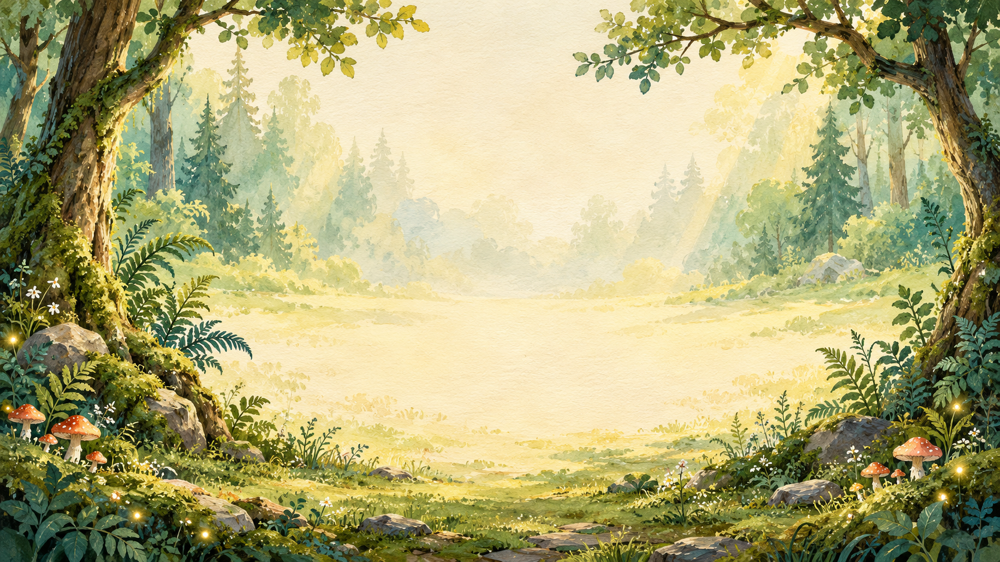

Your music.
Your movements.
One finished show.
Turn a song into a beautifully illustrated play-along. Time the cues as you listen, give it an opening and a big finish, then download the whole video.

Start with your audio.
In Audio, drop a song onto the upload area or choose a file. MP3, WAV, M4A and other formats supported by your browser can be used. Files may be up to 100 MB.
Give your video a title. Use Start and End to choose up to eight minutes. These numbers refer to the original recording. Click the waveform to seek; Set start here and Set end here use the current song position.
Your audio stays on your device. The studio uses your recording—there is no music generator.
Perform the cue track.
Open Cues and choose Record cues. As the song plays, choose a movement in Space-bar cue, then tap Space when each cue should happen. Pads and number keys also add cues and select the movement that Space repeats. Choose Finish recording cues when done. Undo removes the whole take; another take adds to existing cues.
| Key | Movement | Key | Movement |
|---|---|---|---|
| 1 | Pat legs | 6 | Tap shoulders |
| 2 | Clap | 7 | Wave |
| 3 | Stomp | 8 | Freeze |
| 4 | Snap | 9 | Rest |
| 5 | Say a word | Space | Add selected cue |
Set the word in Word cue before recording, or change individual words afterward. Eight cues form a page with two rows of four pictures. Pages advance automatically.
While paused, click the waveform and tap a pad to add a cue at that position. P plays or pauses. Cue shortcuts are inactive while typing in a field or using a dialog. Pausing finishes the current take.
Make the timing feel right.
Click any movement square in the preview to pause, jump to that cue on the timeline, and open its editor. This works for both rows and every page. With the preview focused, Enter edits the current square.
Drag a marker along the waveform to retime it. Zoom up to 16× for closer work. Select a marker to change its movement, enter an exact Song time, edit its word, nudge by 10 milliseconds, or delete it.
The All movement cues list helps you navigate long shows. Cues outside the selected song segment are kept, but do not play or appear in the export. Extend the segment to include them again.
Cues are attached to the original audio. Making an opening slide longer never shifts a clap to a different moment in the song.
Set the beat and feel.
Open Beat & feel below the preview and turn on Use musical beat timing. Enter a tempo, or play the song and tap T or Tap tempo on the main beat. After at least three taps, choose Use tapped tempo. Space continues to place movement cues; P plays or pauses.
Choose 2/4, 3/4, or 4/4 for quarter-note beats. In 6/8, 9/8, and 12/8, tempo counts dotted-quarter beats: respectively two, three, or four big beats per measure, each divided into three. Seek to a clear downbeat and choose Set beat 1 here, or type its song time. Measure numbers and beats appear on the waveform; zoom in for subdivisions.
Suggest tempo from audio analyzes up to 45 seconds starting at the playhead, stopping at the next tempo section. Choose a suggestion to apply it. This is a pulse estimate, not automatic meter, swing, or downbeat detection. Use ½ tempo or 2× tempo if the pulse feels too fast or slow, then align beat 1 by ear.
Two straight puts hits on the beat and halfway through. Two swung uses the swing slider: 50% is straight, 60% is light swing, and Triplet swing is exactly two-thirds of the beat. A manual second-hit delay overrides the automatic spacing for that cue.
Compound subdivisions gives you three positions inside one big beat. Select any of them: 1–2–3 for three hits, 1 and 3 for a long-short pair, or 1 and 2 followed by silence. Unselected positions appear as rests. You can also start with a silent subdivision. The picture highlights and percussion use the same hit times in preview and export.
Choose + Section here at a new downbeat to change tempo, meter, or swing from that point onward. Each section starts its own measure count; select it from the Tempo section menu to edit or remove it. For changing tempos, add sections at useful downbeats and refine the settings by ear. Cue start times stay attached to your original audio.
Snap new and dragged cues to beats is optional and starts off. It affects new cues and waveform dragging, not existing cue times or precise numerical edits. Hold Alt while dragging for free placement. The grid is an editing aid and does not appear in your finished video.
Give it your artistic signature.
Two eighth notes, one square: choose Two straight or Two swung in the Cues panel before tapping Space, or select an existing square and change its Rhythm. Pat, clap, stomp, snap, and tap have pairs in every art collection. Each square shows two pictures and highlights them in sequence. Press Space once per paired square.
With musical beat timing off, straight pairs put the second hit halfway to the next cue. The last square uses the preceding beat length, or half a second for a lone square. With the beat grid on, spacing follows the selected tempo. Swung pairs use the section’s swing amount. Enter a Second hit after delay in milliseconds to refine it; clear the field to return to Auto. Small dots on the waveform show the hit times. Hits stay inside their square, tempo section, and selected song segment; the inspector explains when a short gap has compressed their spacing.
Sound rhythm movements adds short percussion accents for each selected hit in paired and compound cues during preview and MP4 export, with a separate level control. Turn it off to keep only your uploaded song. Cue recording always plays the song alone so you can hear its timing clearly.
In Look, mix any of twenty-one illustrated worlds with eleven movement-art collections. Choose your backdrop, then pair it with your favorite movement pictures. The 8-bit collection adds Meadow, Cosmos, Neon City, and Castle backgrounds with matching pixel-art body parts. Choose 8-bit Pixel under Movement art, or mix the pixel art with any other world. Claymation Puppets adds a handmade stop-motion look with Garden, Seaside, and Moon worlds. LEGO-style Bricks adds brick-built body parts with Brick City and Brick Space backgrounds. All collections work with paired and compound rhythms.
Turn off movement names for pictures-only cards. Choose Text-free video to hide all text, including titles, closing messages and countdown numbers. Gentle motion tones down animation.
Build the opening and the big finish.
In Show, customize your opening subtitle and creator credit, explain the activity on the instruction slide, and write the ending message. Each slide can be included or removed, and its duration changed.
Choose Paper sweep, Studio dissolve, Iris reveal, Cinematic zoom, Theater curtain or a clean cut. Add a visual countdown and choose flowing or clean-cut cue pages. The movement grid is fully visible when the song begins.
The song starts after the opening slides and finishes before the ending; these slides are silent. Set audio fade-in and fade-out lengths, or use zero for an abrupt start or ending. Click the storyboard below the preview to jump to each part.
Export the complete movie.
Choose Export MP4, then Full HD · 1920 × 1080 · 60 FPS. The lighter 720p option also keeps 60 FPS. Both include audio, movement pages, slides, transitions and ending in one MP4.
Rendering processes frames as quickly as your device can manage, without recording the preview in real time. Speed depends on your device and browser. Progress shows the rendering rate; you can cancel safely.
Review the finished video and choose Download MP4. Export requires H.264 and AAC encoding. If the studio reports these encoders are unavailable, try a current desktop Chrome or Edge browser or the 720p setting.
Keep a copy you can reopen.
Save project downloads a .playalong.json file containing your original audio, cue times, artwork and show settings. Use Open to continue on another device.
New project starts a fresh show. Choose Save & start new to download your current project first, Start new to reset without a download, or Keep editing to cancel.
The studio also saves locally in the current browser. Download a project for a portable backup. If audio storage was cleared, reattach the song and keep your cue timing. Older projects with uploaded audio are converted; projects that used generated music need a new audio file.